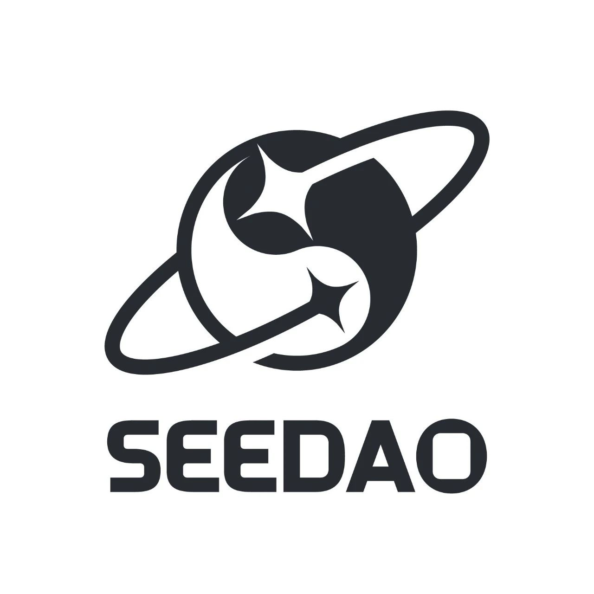

新手村投稿 | 我和 SeeDAO
作者: 月子哥KK
没人代表 SeeDAO，但人人都可以是 SeeDAO。

我已经忘记为什么注册“即刻”，今年我知道它的时候，才发现是过气软件。我在上面定下了我每个月要更新的内容，时不时更新一些自己的看法和见解。我取名叫做月子哥的随笔。我的粉丝不多，这跟我是初学者也有关系。冥冥中，就是有人跟我搭上了线，这个人，应该说组织，就是SeeDAO。其实还有其他的DAO在接触，比如BuidlerDAO，但我觉得有点不对口，所以一直就没有关注。机缘巧合，还是跟SeeDAO结了缘。第一印象：估计是刚成立的组织，算了，进去看看
我报名了 SeeDAO 的新人训练营，应该是第一期，结果过了好几天，没声音了。我心里想：估计我年纪太大，没被选上。后来我才知道，原来是小助理微信被封了。。。我：“这。。有点不够专业啊，算了，原谅它吧”
那段时间我比较闲，天天在网上冲浪。等小助理好不容易解封，告诉我第一期要十几天后开始，我实在等不及，想要立刻体验，小助理告诉我还有第 0 期。就这样，我加入了第 0 期的训练营。在此期间，我慢慢做了新手任务，去了解了 SeeDAO 的历史，去看了很多的文章，同时也发表了一些公开话题，以及结交了 SeeDAO 的核心成员们。这时我反应过来:：“这不是什么大学生项目。是一批长征，过草地的一腔热血的大神，坚持的结晶。”发现：SeeDAO 里面是八仙过海，各显神通
我是一个喜欢爬山的人，正巧4月份香港大会，我计划在香港爬山，于是乎我在各大群里吆喝招呼小伙伴一起爬山。最终天南海北进群的朋友大概有 40 来个，群里报名参加的有大概 20 多人，实际最终参与爬山的陌生人：第一天是 1 人；第二天也是 1 人。第一天是 Jason：SeeDAO 的伦敦联络人。第二天是 Neal：SeeDAO 的早期贡献者。Neal 是狠人，那天爬山我们约好是凌晨5点多集合，他从酒店硬生生跑过来，6 公里。也就是说 4 点多起床，佩服。我跟 SeeDAO 人的缘分，就像是有着一丝丝千丝万缕的联系。慢慢的认识了一起打德扑的朋友，认识了本地的朋友，更幸运是收获了一起打黑客松的小伙伴，以及同样喜欢爬山的爬友，我收获颇丰，99% 的朋友都没见过，但能感觉出来正向的一面。后来我到了深圳，自然又约见了组织，见到了冷总还有其他小伙伴，我们在路边喝酒，吹牛，开合约。在杭州见了 Chong，在静谧的小院内喝茶聊天。
慢慢让我意识到，其实 SeeDAO 并不神，它由一个个具体，又具有特点的人组成。每个人都有他的故事，横看成岭侧成峰。他爬山厉害，或许他打游戏并不强。他公司管理厉害，或许人际交往就不行。在网络上，大家最强的那一面，组成了 SeeDAO 这个组织。在现实中，SeeDAO 又摔碎成为了每一个鲜活的人。没人代表 SeeDAO，但人人都可以是 SeeDAO。组织的意义就在于你似乎感受不到他的存在，但他又无处不在。假如我现在去到北京，我很相信，通过组织，我又能见到一个个有趣的灵魂，这或许就是我理解它存在的意义。